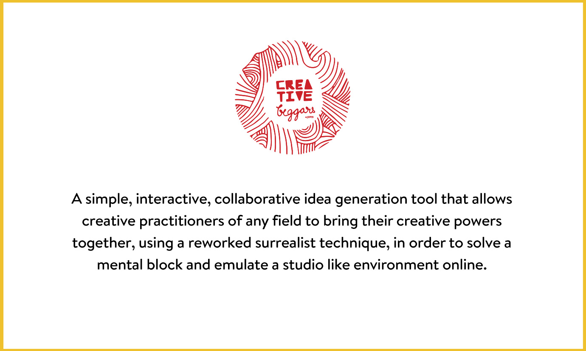
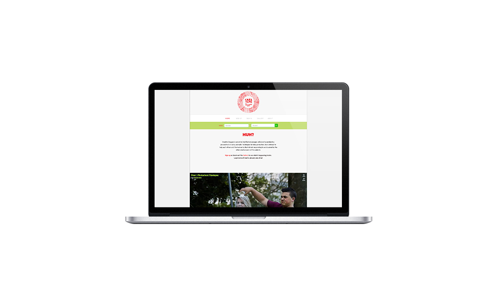
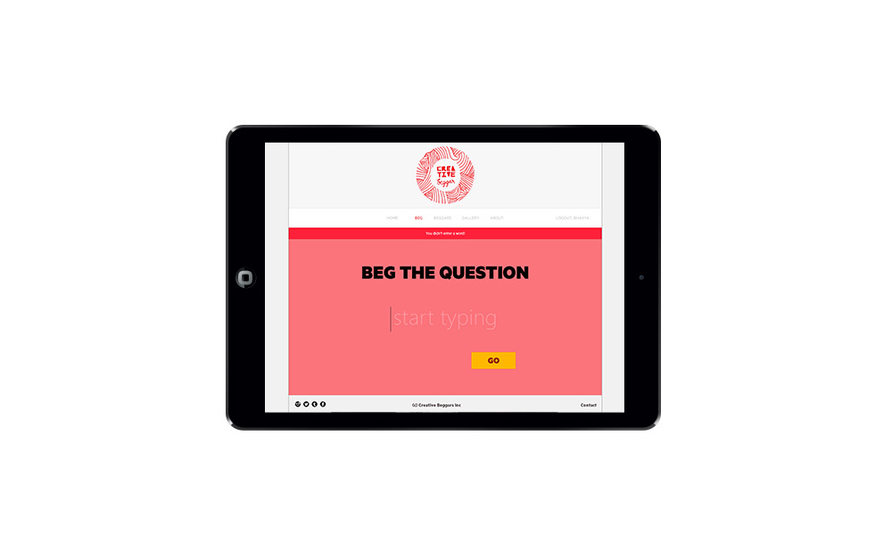
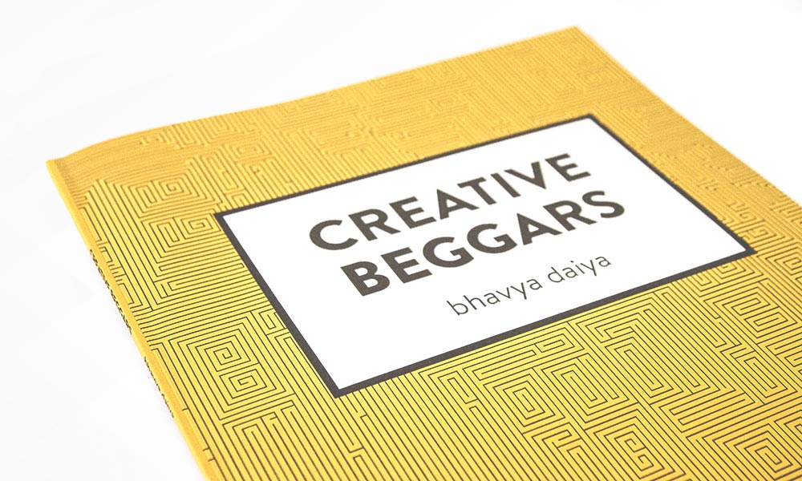
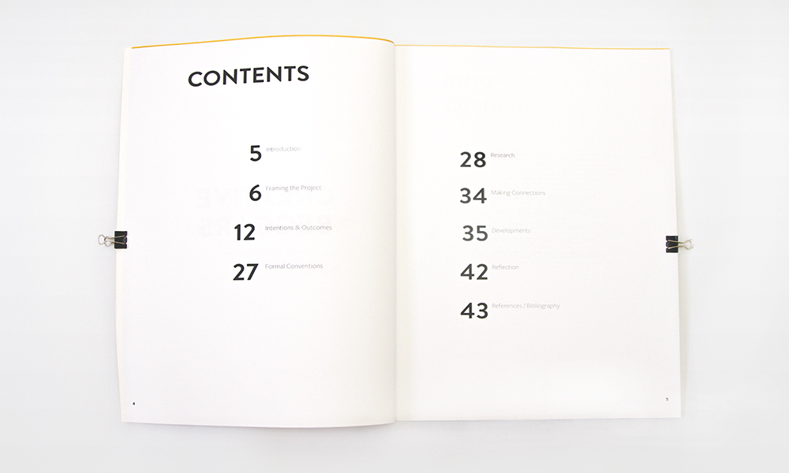
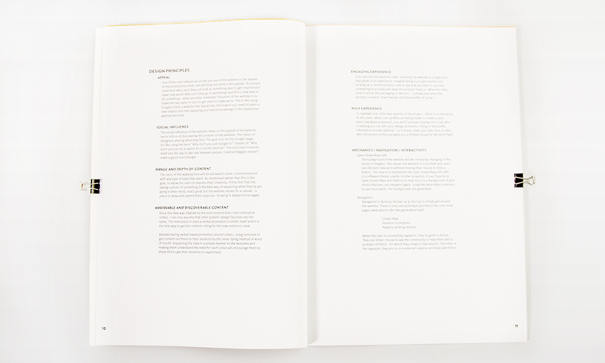

bhavya daiya
- 
- 
- 
- 
- 
- 
creative beggars
job type:
university assignment
collaterals made:
website, project document
As an immigrant at an early, yet vital age of 10, I never had the chance to fully immerse myself into neither the Indian nor the New Zealand community. I missed the chance of socializing and growing older has only made me regret this more every day. Finding out that the environment wasn’t like high school, where we were lucky enough to be put into large preset groups with the same assessment, expecting the same outcome. Instead, the lifestyle at university is highly in contrast to this; everyone has dispersed off, doing their own things. I noted a lack of peer to peer support and conversation which resulted in Creative Beggars being my solution to this silence.
The way I have managed to carry this out is via an interactive website that relies on user participation to help creatives form a community. I achieve this by using a creative strategy based on surrealist techniques that the website hosts. The community reaches beyond students and helps professionals too, because we know that everyone gets stuck for ideas and there is no hierarchy for users. The website also works as form of procrastination as not everyone wants to ask for help to get ideas, but by simply assisting somebody else, one can get enough inspiration to start something new.
The content of the website hosts one activity where users are be able to BEG (you start with a word) or CREATE (give a response to someone’s word in a pictorial manner), and their responses can be one upped by other users of the website. The gallery/archives showcases the illustrated responses that users have submitted. Additionally, the gallery can transform into a giant map as the amount of content increases. To allow content to stand out, I have made the website have a flat, varying look so the doodles/drawings aren’t lost within the page and the website is always ‘fresh’.
I have also thought about the usability of the project and hence made the website accessible using any device that is up to 3 generations old such as predecessors to latest tablets and latest smartphones. This allows for quick and easy, idea generation and productive procrastination on the go.